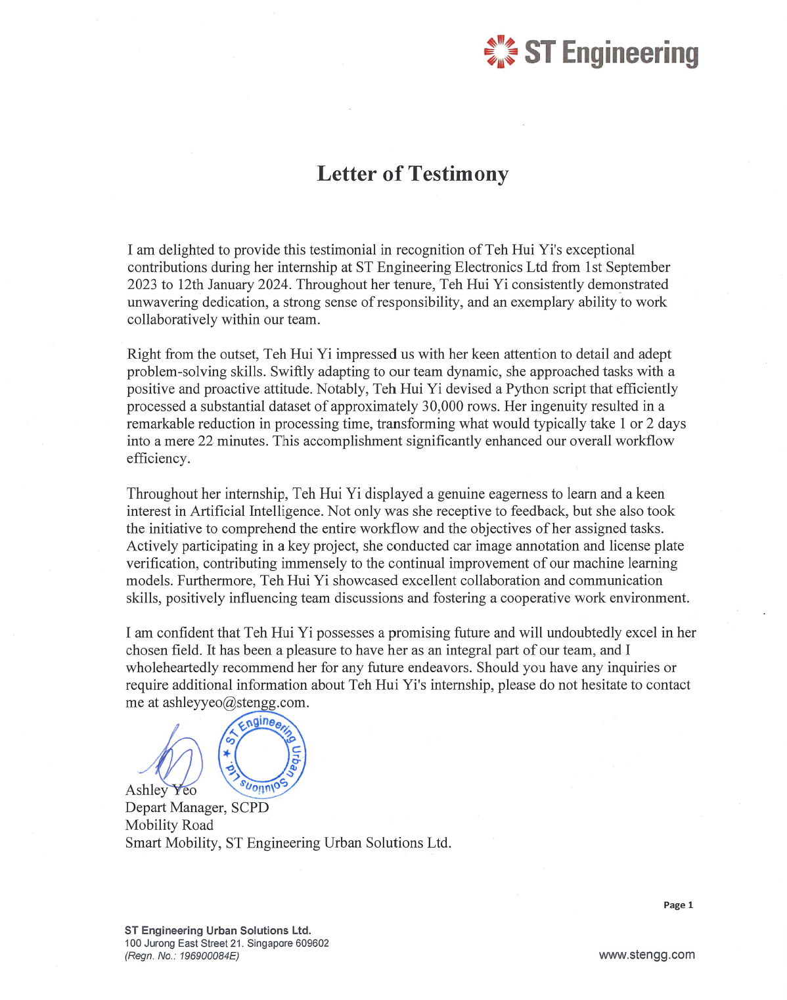

Work
ST Engineering Urban Solutions Ltd. (May 2024 - Sep 2024)
ST Engineering Urban Solutions Ltd. (Sep 2023 - Jan 2024)
During my internship at ST Engineering Urban Solutions Ltd., I successfully implemented a highly efficient Python script to automate the processing of a sizable dataset, comprising around 30,000 rows. This script not only eliminated the need for manual intervention but also significantly reduced the processing time from 1 or 2 days to a mere 22 minutes. The implementation led to a remarkable enhancement in overall workflow efficiency. Additionally, I played a pivotal role in the implementation of car image annotation, contributing to the improvement of machine learning models by enhancing their understanding of diverse visual elements. Moreover, I adopted an iterative approach to license plate verification, embodying continuous improvement principles to optimize accuracy and reliability in both machine learning and deep learning models.
ST Engineering Urban Solutions Ltd. (May 2022 - Sep 2022)
During my tenure as a temporary data analyst in this role, I played a crucial role in processing essential data required by my superiors. Leveraging Microsoft Excel formulas and the Python programming language, I ensured accurate and efficient data manipulation. Additionally, I demonstrated proficiency in data visualization techniques, utilizing pivot charts in Microsoft Excel and SAS Visual Analytics to present insightful representations of the data. Beyond data analysis, I actively contributed to the team by creating a User Acceptance Testing (UAT) template and actively participating in the testing process for the GoParkin mobile application. Moreover, I provided valuable support to my superiors by assisting in video editing tasks, showcasing my versatility and commitment to meeting diverse job requirements.
ST Engineering Urban Solutions Ltd. (Mar 2021 - Jul 2021)
In my role as an associate engineer, I took charge of a significant project involving the renewal of CA certificates for routers and switches configuration at HDB sites, as part of the collaboration between ST Engineering and the Singapore Police Force (SPF). This hands-on experience provided me valuable insights into project management, emphasizing the crucial balance of time, scope, and resources management. Effectively planning and coordinating with relevant authorities, I ensured the smooth execution of the daily deployment schedule. Utilizing forecasting techniques, I successfully anticipated the project's completion date, managing to deploy over 1,400 routers approximately one month ahead of the expected timeline. Building on this experience, I took on a leadership role, guiding three interns and assisting my superiors in another project focused on network equipment configuration at MRT sites.
SAS Pte. Ltd. (Sep 2020 - Jan 2021)

Through this internship, I significantly improved my proficiency in Microsoft Excel, recognizing the importance of effective communication in the workplace. Moreover, I seized the opportunity to expand my skill set by enrolling in various courses offered by the company, including SAS Programming, SAS Visual Analytics, and Statistics. Successfully completing the SAS Base Programming examination, I earned the prestigious SAS Certified Specialist_Base Programming Using SAS 9.4 certificate. Besides, I was honored with an invitation to my supervisor's house, where I had the unique opportunity to engage in a hands-on experience crafting a rainbow-themed terrarium.